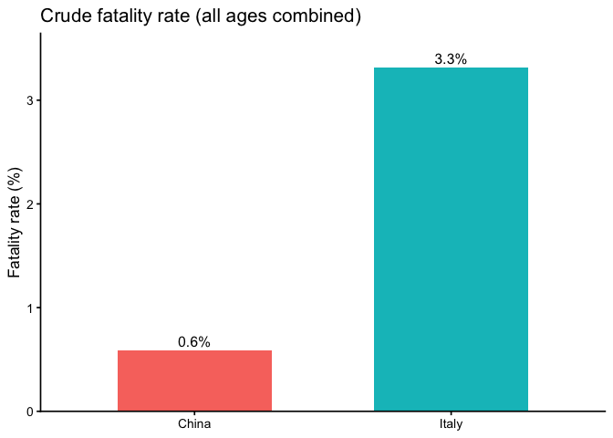
1 Measuring and Describing Data
Chapter notes
Adapted to environmental science by Mallory Barnes. Portions adapted from Chapters 1 and 2 in Navarro, D. J. “Learning Statistics with R.” https://compcogscisydney.org/learning-statistics-with-r/
To call in statisticians after the experiment is done may be no more than asking them to perform a post-mortem examination: They may be able to say what the experiment died of. – Sir Ronald Fisher
1.1 The Role of Statistics in Environmental Science
Environmental questions are almost always questions about change. Is this stream warming? Are these bees declining? Did the restoration work? What makes them hard is that the systems involved never sit still to begin with. Streams warm and cool over a single day, bee counts swing with the weather, and vegetation recovers in fits and starts. Something is always changing, so finding a real effect means separating it from all the change that would have happened anyway.
That is the problem statistics exists to solve. It gives you a way to say how much of what you observed is the thing you were looking for, how much is ordinary variation, and how much confidence you should have in telling the two apart. Every environmental claim you will read, make, or have to defend rests on that distinction, whether or not the person making it says so out loud.
1.1.1 Why Numbers Matter
Common sense is useful, but it is prone to bias. When we already believe something to be true, we are more likely to interpret new evidence as supporting it, even if it does not. This tendency can lead us astray.
For example, if you’re convinced that industrial farming is the main driver of bee declines, you might see every new drop in bee abundance as confirmation of that belief. Maybe you’re right, but maybe disease or weather are stronger contributors. Statistics gives us tools to test these ideas systematically. It helps us separate patterns from noise, avoid being misled by our own expectations, and draw conclusions that are more likely to hold up under scrutiny. It’s not magic, but it makes our conclusions far more reliable.
Another challenge is that the same data can tell very different stories depending on how they are aggregated. Simpson’s paradox occurs when a trend seen in combined data reverses after you split the data into meaningful groups.
Here’s a recent example. During the COVID-19 pandemic, early data showed that Italy’s overall case fatality rate was higher than China’s. But, once researchers disaggregated by age group, the trend flipped: within every age group, the fatality rate was actually higher in China. The apparent contradiction was explained by differences in the age distribution of cases (von Kügelgen et al. 2021).
Using case fatality rate (CFR), here are some illustrative numbers (made up for teaching).
At face value, Italy looks worse. But what happens when we stratify by age group? Because age strongly affects COVID fatality, splitting cases into 10-year bands reveals a different picture. When we do, China’s fatality rate is higher in every band.
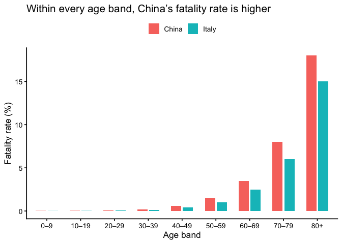
Why the reversal? Italy’s population skews older while China’s skews younger, and baseline risk rises steeply with age. It is not that people in China fared better, it is that Italy had a greater proportion of older people getting sick, which pulls Italy’s overall average up and China’s down. Aggregating without adjusting for age hid the within-group pattern entirely. That is the disciplined check statistics offers: the answer can reverse once you ask the data a more specific question.
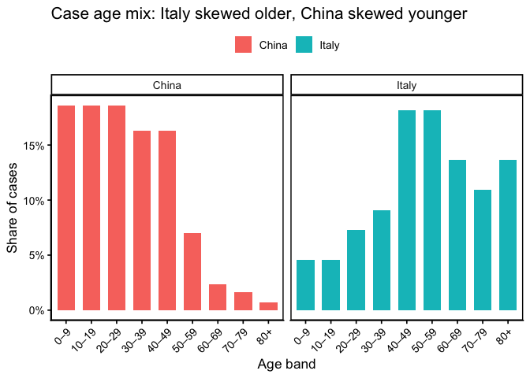
Sheer volume is the other reason. Satellites measure surface temperature, field stations log rainfall, and sensors track air quality, so a single study can generate thousands of rows. Meanwhile river flow changes by the hour, forests grow unevenly, and human activity layers on more variability still. Statistics is how we compress all of that into something we can reason about, and how we ask whether an apparent change is real or just the fluctuation we would expect anyway.
It would be reasonable to ask why you need to learn this yourself rather than handing the analysis to someone who already knows it. Three reasons:
Design and analysis go together. A good study starts long before you run a statistical test. If you want to study how fertilizer affects crop yields, your sampling plan and your analysis are inseparable. Poor design, like measuring only in unusually wet fields, can’t be rescued by sophisticated analysis.
Understanding the Science: Scientific papers on climate change, biodiversity, or pollution are built on statistical results. To interpret them, you need to know what the numbers mean.
Practicality: Hiring a specialist for every question isn’t realistic. A working knowledge of statistics makes you more self-sufficient, whether you end up working as a scientist, an environmental manager, or a decision-maker who has to evaluate someone else’s analysis.
“We are drowning in information, but we are starved for knowledge”
– Various authors, original probably John Naisbitt
Finally, none of this is only for researchers, or only for environmental science. Weather forecasts, air quality alerts, and wildlife population trends are all communicated through numbers, and so are the statistical claims that turn up in news coverage, policy debates, and podcasts. Once you can recognize the difference between a correlation and a cause, or spot a claim resting on a sample too small to support it, you start noticing those moves everywhere. A basic knowledge of statistics is what lets you tell whether the numbers support the claim being made, or whether someone is stretching them. In that sense, it is part of being an informed citizen in a data-saturated world.
1.2 Introduction to measurements
Every dataset begins with measurement: assigning numbers, labels, or categories to aspects of the world so they can be recorded and analyzed. Science often deals with broad ideas that need to be pinned down before they can be studied. For example, soil health or forest change are meaningful, but vague. To analyze them, we have to decide exactly what we mean and how to capture it. That process is called operationalization: turning a general concept into something measurable.
Before moving on, let’s clarify how operationalization fits with three related terms:
- Operationalization: the step where you define exactly how a broad idea will be captured with a measure
- Measure: the tool or method used to make observations
- Variable: the actual values you record once the measure is applied. Variables are the actual data that end up in our dataset.
Example:
- Concept of interest: Soil health
- Operationalization: concentration of organic carbon in the top 30 cm
- Measure: laboratory analysis of soil samples
- Variable: recorded carbon concentration values for each plot
Soil health is the idea we care about, but you cannot go outside and measure an idea. Organic carbon is a defensible stand-in, since healthy soils generally store more of it, but soil health also involves compaction, pH, microbial activity, and how well the soil holds water. So the first decision is which facet will stand in for the whole:
- Which facet? ☐ pH ☐ compaction ☑ organic carbon ☐ microbial activity ☐ water-holding capacity
Choosing carbon means the other facets go unmeasured. And the choice is not finished, it has only narrowed. How deep will you sample? Thirty centimeters is conventional, but 10 cm or a full meter would give different answers:
- Sampling depth? ☐ 10 cm ☑ 30 cm ☐ 1 m
Then come a dozen more, each one a place where another reasonable person might go the other way:
- Which carbon counts? ☑ organic ☐ carbonate minerals ☐ total
- How many cores per plot? ☐ 1 ☐ 3 ☑ 6 ☐ 9
- Where in the plot? ☐ wherever is easiest ☑ stratified random ☐ along a fixed transect
- When in the season? ☐ spring ☑ after harvest ☐ same calendar date each year
Every checked box narrows what “soil health” now means in your dataset, and every unchecked box is a part of soil health your data can no longer speak to. Another researcher could work down the same list, check different boxes, report a different number, and both of you would be right, because you measured different things and gave them the same name.
Operationalization is rarely straightforward, and there is no single correct way to do it. The best choice depends on the question you are asking and how the data will be used. In many fields, scientists have developed common practices, but every project still requires case-by-case judgment. Even so, some principles of good operationalization apply across studies: be precise about what you mean, how you will measure it, and what values are possible.
1.3 Scales of measurement
As the previous section indicates, the outcome of a measurement is called a variable. Not all variables are the same type, and knowing the type matters because it determines which statistical tools make sense. The four classic scales are nominal, ordinal, interval, and ratio.
1.3.1 Nominal scale
A nominal scale variable (also referred to as a categorical variable) is one in which the values are just names. They do not have an inherent order, and it makes no sense to average them.
Example: land cover class. A pixel on a satellite map might be classified as forest, grassland, wetland, or urban. None of those is “greater” than another, they cannot be put in a meaningful order, and there is no such thing as an average land cover.
It is worth being precise about why, because the arithmetic itself does not fail. Map classes are drawn in colors, and colors have numeric codes, so a computer will happily average forest, grassland, wetland, and urban and hand you a result. Figure 1.4 shows what comes back.
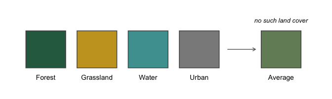
You get a color back. Nothing on the map is that color, and more importantly there is no class it could represent, because forest and urban have no midpoint. That is what makes a variable nominal: the values are labels, not quantities, so arithmetic on them runs perfectly well and tells you nothing. Land cover is unusual in even having numbers attached that could be averaged, and only because someone chose colors for a map. Most nominal variables, like species identity or watershed name, have nothing there to average in the first place.
1.3.2 Ordinal scale
Ordinal scale variables have a meaningful order, but the spacing between values is not defined mathematically. You can rank the values, but you can’t assume equal steps between them, nor calculate a meaningful average.
Example: finishing position in a competition. First place comes before second, and second before third, but the ranks themselves tell you nothing about how far apart the competitors actually were.
An Olympic weightlifting meet makes this concrete, because the thing being ranked is a weight, so we can see both scales at once. Figure 1.5 shows a podium alongside the weights the three athletes actually lifted.
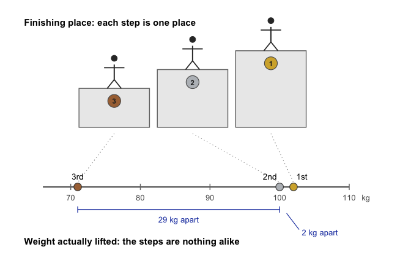
On the podium, second place looks exactly as far from first as it does from third. On the scale below, second place is nearly tied with first and nowhere near third. That is the cost of ranking: it keeps the order and throws away the distances. Notice also that a single event gives us both kinds of variable. The finishing place is ordinal, the weight lifted is ratio, and only one of them can be averaged.
1.3.3 Interval scale
Interval variables have equal intervals between values, so differences are meaningful. However, zero is arbitrary, so multiplication and division are not valid.
Example: temperature in degrees Celsius. A difference of 3\(^\circ\) means the same regardless of whether it is 7 → 10 or 15 → 18. But 0\(^\circ\)C does not mean “no temperature.” That zero is defined by the freezing point of water, which is a useful convention rather than a fact about heat. So you can say today is 3\(^\circ\) warmer than yesterday, but you cannot say 20\(^\circ\)C is “twice as hot” as 10\(^\circ\)C.
Alternate example: calendar years. The ten years from 1990 to 2000 are the same length as the ten years from 2010 to 2020, so differences work fine. But year 0 is a convention we agreed on, not the beginning of time, and other calendars put their zero somewhere else and are equally correct. That is why the year 2000 is not “twice as late” as the year 1000.
1.3.4 Ratio scale
Ratio scale variables have all the properties of interval variables, plus a true zero, meaning zero really does indicate none of the thing. That is what makes multiplication and division valid.
Example: age in years. Zero means no age at all, and someone who is 20 really is twice as old as someone who is 10. Differences (20 – 10 = 10 years) and ratios (20 ÷ 10 = 2) are both meaningful.
Temperature makes an unusually clean comparison here, because the same physical quantity can be recorded on either kind of scale depending on where you put the zero. Figure 1.6 shows both.
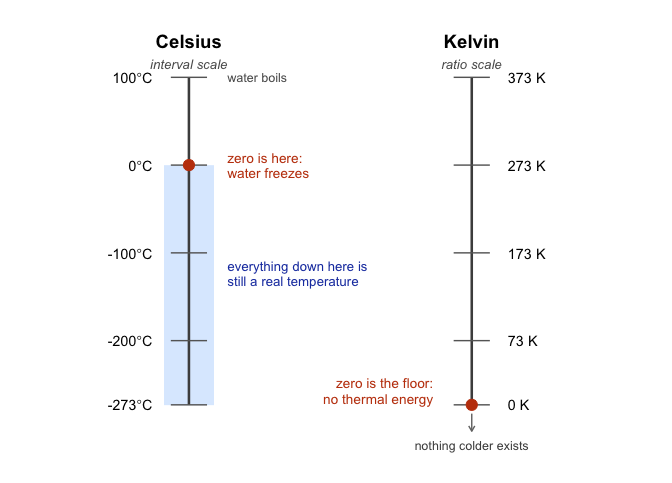
The consequence is easy to check. Going from 10\(^\circ\)C to 20\(^\circ\)C doubles the Celsius number, so it is tempting to call it twice as hot. On the Kelvin scale those same two temperatures are 283 K and 293 K, an increase of about 3.5%. The physical change is small; the doubling was an artifact of where Celsius happens to put its zero. Kelvin, with a true zero, gives ratios you can trust: 200 K really does carry twice the thermal energy of 100 K.
| can rank | can subtract/add | can multiply/divide | example | |
|---|---|---|---|---|
| nominal | land cover class | |||
| ordinal | x | finishing place | ||
| interval | x | x | temperature (°C) | |
| ratio | x | x | x | age |
1.3.5 Continuous versus discrete variables
Another useful distinction is whether a variable can take on values in between others.
A continuous variable can, in principle, take on any value within a range. For example, consider height. If you are 72 inches tall and your friend Cameron is 71 inches tall, Alan could be 71.4 inches and David 71.49 inches. Because we can always imagine a new value in between two others, height is continuous.
A discrete variable is, in effect, a variable that isn’t continuous. Discrete variables have separate, distinct values with nothing in between. Nominal variables are always discrete: there is no land cover class that falls “between” wetland and urban in the same way that 71.4 falls between 71 and 72. Ordinal variables are also discrete: although second place falls between first and third, nothing can logically fall between first and second.
Interval and ratio variables can be either. Height (a ratio variable) is continuous. But the number of people living in a household (a ratio variable) is discrete: you cannot have 4.2 people. Temperature in degrees Celsius (an interval variable) is also continuous. But the year you started college (an interval variable) is discrete: there is no year between 2022 and 2023.
The table below shows how the scales of measurement relate to this distinction. Cells with an “x” mark what is possible.
| continuous | discrete | |
|---|---|---|
| nominal | x | |
| ordinal | x | |
| interval | x | x |
| ratio | x | x |
1.3.6 A note on real data
These categories are guides, not hard rules. For example, survey responses on a 1–5 “strongly disagree” to “strongly agree” scale are technically ordinal, but researchers often treat them as “quasi-interval” because the spacing is assumed to be roughly equal.
1.4 The role of variables: predictors and outcomes
One last piece of terminology before we leave variables behind. In most studies we have many variables, but when we analyze them, we usually split them into two roles: the thing we’re trying to explain and the thing doing the explaining. To keep it straight, we use \(Y\) for the variable being explained, and a \(X_1\), \(X_2\), etc. for the variables used to explain it.
Traditionally, \(X\) is called the indepdendent variable (IV) and \(Y\) is the dependent variable (DV). The logic is that if there’s a relationship, \(Y\) depends on \(X\). These terms can be clunky and can be confusing because: (a) IVs are rarely actually “independent of everything else” and (b) if there’s no relationship, then the DV doesn’t actually “depend” on the IV at all.
Two alternative vocabularies are often clearer. In experiments, IVs are manipulations and DVs are measurements. When we are using \(X\) to predict \(Y\) rather than manipulating anything, the pair is predictor and outcome.
| role of the variable | classical name | in experiments | in prediction |
|---|---|---|---|
| “to be explained” (\(Y\)) | dependent variable (DV) | measurement | outcome |
| “to do the explaining” (\(X\)) | independent variable (IV) | manipulation | predictor |
Note
Which terms this course uses. You should recognize all three pairs, since all three appear in the literature. This book uses IV and DV when comparing groups (\(t\)-tests, ANOVA) and predictor and outcome for regression, where nothing is manipulated and “independent variable” would mislead. A later chapter switching vocabulary is following the convention of the method, not introducing a new idea.
1.5 Experimental and non-experimental research
A central distinction in research is between experimental and non-experimental studies. What matters here is the degree of control the researcher has.
In experimental research, the researcher deliberately manipulates something (the predictor/IV) and measures its effect on outcomes (the outcome/DV). The goal is to isolate causal effects. To avoid the problem of “something else” influencing the outcome, researchers try to hold other factors constant. In practice, it’s almost impossible to identify everything that might matter, much less keep it constant. The standard solution is randomization. Randomization doesn’t eliminate confounds, but it makes them less likely to systematically bias results.
For instance, suppose we wanted to know if smoking causes lung cancer. Observing smokers and non-smokers can only get us so far, because those groups differ in many ways besides smoking, like occupation, income, and diet. A true experiment would require randomly assigning people to smoke or not. You can see how that would be deeply unethical. The same problem comes up in medicine: we know surprisingly little about how certain drugs or exposures affect pregnant people, precisely because we cannot ethically assign them to risky conditions.
In environmental science the limitation is usually not ethics but feasibility. There is no control planet to set aside as a baseline, and nobody can dial precipitation or temperature up and down. So the field leans heavily on non-experimental research, which mostly takes three forms.
Quasi-experiments compare conditions the researcher did not create. You cannot control what a factory discharges into a river, but you can compare reaches above and below the outfall and use statistical tools to account for the confounding variables you could not hold constant.
Time series follow one system over a long stretch, which matters because many environmental processes unfold across decades or centuries. Tracking global temperature or sea level takes years of consistent measurement, and statistics is what separates the trend from the natural year-to-year noise.
Case studies go deep on a single event or place: the aftermath of a wildfire, the ecology of a threatened habitat, the consequences of a policy. One case is tied to its context, but a well-designed one can still expose a mechanism that travels. A drought in one forest can reveal how water potential and transpiration respond to stress, which helps anticipate what other forests will do.
1.6 From measurement to description
The first half of this chapter was about what data are: how a broad concept gets operationalized into a variable, what scale that variable lives on, and what kind of study produced it. The rest of the chapter is about what to do with a dataset once you have one.
Far better an approximate answer to the right question, which is often vague, than an exact answer to the wrong question, which can always be made precise.
John W. Tukey
Statistics often begins with the problem of too much data. Rainfall at hundreds of stations, thousands of tree measurements in a forest survey, millions of satellite pixels: looking at raw numbers alone is overwhelming and uninformative. We need tools to compress, summarize, and visualize, and those tools are descriptive statistics.
There is more than one useful way to describe a dataset, and which one you reach for depends on the pattern you are trying to reveal. Every method in this half of the chapter was invented for that reason.
1.7 Looking at the data
Everything up to now has been about where numbers come from. From here on we work with a real dataset, so the tools have something concrete to act on.
R ships with airquality, a record of daily air quality measurements taken in New York from May through September of 1973. Each row is one day, with ozone concentration (parts per billion), solar radiation, wind speed, and maximum temperature.
| Ozone | Solar.R | Wind | Temp | Month | Day |
|---|---|---|---|---|---|
| 41 | 190 | 7.4 | 67 | 5 | 1 |
| 36 | 118 | 8.0 | 72 | 5 | 2 |
| 12 | 149 | 12.6 | 74 | 5 | 3 |
| 18 | 313 | 11.5 | 62 | 5 | 4 |
| NA | NA | 14.3 | 56 | 5 | 5 |
| 28 | NA | 14.9 | 66 | 5 | 6 |
Look at the NA entries. Ozone and solar radiation were not recorded every day, and real environmental datasets almost always have gaps like this. That has an immediate practical consequence:
mean(airquality$Ozone)
#> [1] NAR returns NA rather than a number, because it has no way of knowing what the missing days would have been. You have to tell it explicitly to set those days aside:
mean(airquality$Ozone, na.rm = TRUE)
#> [1] 42.12931That na.rm = TRUE will follow you through the rest of the course. Now, to the data itself.
1.7.1 Scatter of raw values
Plot every value. Before summarizing anything, it is worth simply looking at all of it.
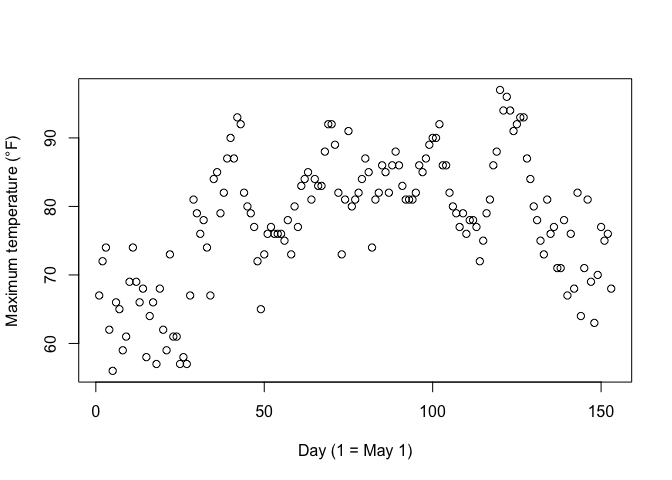
Figure 1.7 shows all 153 daily temperatures at once, with day number across the bottom and that day’s maximum temperature up the side. Already this tells us more than a table of 153 numbers would: there is a clear seasonal arc, cooler in May, warmest through July and August, cooling again by September.
But notice what the plot does not answer well. If you want to know whether most days were warm or cool, you end up squinting at a cloud of dots, because the seasonal ordering gets in the way. For that we need a different view, a histogram.
1.7.2 Histograms
A histogram summarizes data by grouping values into bins rather than showing each point separately. It throws away the day-to-day ordering on purpose, and in exchange it shows you the shape of the data.
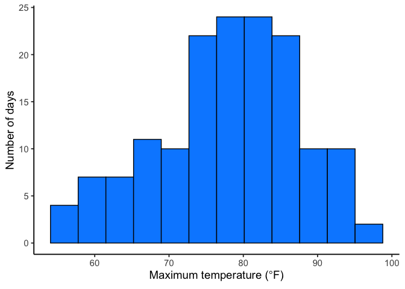
Each bar counts the days falling in a temperature range, and the pattern is now easy to read: most days land in the 70s and 80s, with a tail of cooler days near 56°F and relatively few above 90°F.
Bin width is a choice you make. Wide bins look smooth but hide detail; narrow bins show more variation but can dissolve into noise. Figure 1.9 compares the same temperatures at four bin widths.
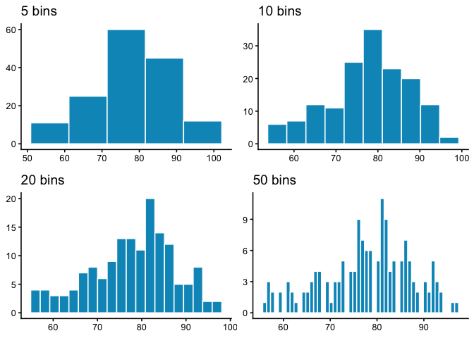
All four show the same general shape, but the extremes are unhelpful. Five bins is so coarse that the peak becomes one wide block; fifty spreads 153 days so thinly that bars jump around at random. The middle two are the ones you would actually use. A histogram trades away the individual values and the day-to-day ordering, and in exchange it shows you the shape of the data, but only if you pick a sensible bin width.
1.8 Important Ideas: Distribution, Central Tendency, and Variance
Three terms will keep coming up: distribution, central tendency, and variance. Their everyday meanings aren’t far from the statistical ones.
Distribution: how values are spread across their range. A histogram is one way of showing a distribution. The shape of the distribution tells us where values are concentrated, where they’re rare, and how far the extremes reach. Later we’ll see that distributions don’t just describe data, we also use them to generate theoretical data, which is the basis for sampling distributions and tools like t-tests.
Central tendency is about sameness: where values cluster. In the temperature histogram, most days sit in the high 70s and low 80s, so we say the data have a central tendency around 80°F. Central tendency doesn’t mean “everything is the same”, just that many values gather in a common area. Some datasets even have more than one cluster, and therefore more than one central tendency.
Variance is about differentness: how spread out the values are. If every day had been 78°F, variance would be zero. Instead the days run from 56°F to 97°F, so there is real variance to describe. In practice, variance is a family of measures we use to quantify differences, and we’ll introduce those next.
1.9 Measures of Central Tendency (Sameness)
Plots and histograms show where values fall, but lack precision. We can summarize data with a single number representing its “center” - these measures of central tendency show what values are generally like.
1.9.1 Mode
The mode is the most frequently occurring value: count how often each value appears, and whichever wins is the mode. In 1 1 1 2 3 4 5 6 the mode is 1, since it appears three times.
Ties are allowed. In 1 1 1 2 2 2 3 4 5 6 both 1 and 2 appear three times, so the data have two modes.
The mode does not always land where you would call the center. In 1 1 2 3 4 5 6 7 8 9 the mode is 1, but nearly every value is larger. It is most useful when a dataset has genuinely repeating values, and like any tool it needs to suit the data you have.
1.9.2 Median
The median is the exact middle of the data once they are ordered from smallest to largest. For example:
1 5 4 3 6 7 9
Before we can compute the median, we need to order the numbers from smallest to largest. Ordered:
1 3 4 5 6 7 9
The median is 5, with three numbers on each side.
With an even count there is no single middle value, so the median is the midpoint of the two central numbers. In 1 2 3 4 5 6 that is halfway between 3 and 4, or 3.5.
The median holds still when extreme values do not. Consider 1 2 3 4 4 4 5 6 6 6 7 7 1000. Most values are modest and one is wildly out of line, yet the median is still 5, sitting right where the bulk of the data is. That value of 1000 is an outlier, a value much farther out than the rest. Outliers can drag the mean a long way while leaving the median untouched, and how to handle them is a question we return to later in the course.
1.9.3 Mean
The mean, also called the average, is the sum of a set of numbers divided by how many numbers there are.
\[Mean = \bar{X} = \frac{\sum_{i=1}^{n} x_{i}}{N}\]
The \(\sum\) symbol is sigma, and it means “sum these up.” The \(x_{i}\) are the individual numbers, \(i\) runs from the first to the last, \(N\) is how many there are, and \(\bar{X}\) is the mean. In plainer terms, it is the sum of your numbers divided by the count of your numbers.
For the five numbers 3, 7, 9, 2, and 6, that gives
\[\bar{X} = \frac{3+7+9+2+6}{5} = \frac{27}{5} = 5.4\]
Whether the mean is a good summary, as with the mode, depends on the data.
1.9.4 What does the mean mean?
Knowing how to calculate a mean is not the same as knowing what it represents. The formula divides a sum by a count, but what does that operation actually do?
Think about plain division. When we compute \(\frac{12}{3} = 4\), we are splitting 12 into three equal parts of 4 each. Division equalizes the numerator into identical pieces.
The same logic applies to the mean. Suppose you add up every daily temperature across the whole summer into one large total. If that total were redistributed equally across all the days, each day would get the same value. That value is the mean. Individual days were originally warmer or cooler, but the mean is the balance point created by spreading the total evenly.
This is why the mean is more than just arithmetic. It is the one number that can replace every observation so that, when all those replacements are added together, you get back the original total.
That is what makes the mean unique. It is the only single value that can replace every observation and still leave the total unchanged.
1.9.5 Comparing the mean, median, and mode
So far we have three summaries of the “middle” of a dataset. It is worth seeing what happens when they disagree, because the disagreement itself is informative.
Temperature was a well-behaved variable: its mean (77.9°F) and median (79°F) sit almost on top of each other, which is what you expect when a distribution is roughly symmetric. Ozone is a different story.
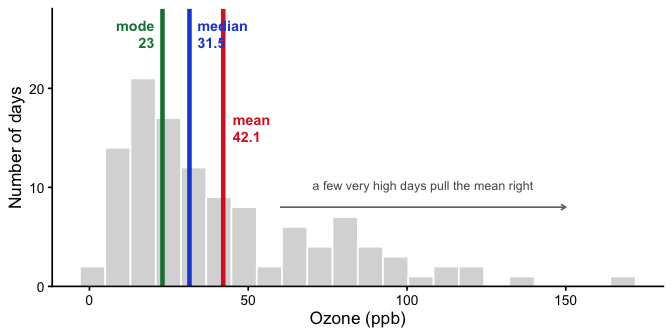
All three land in different places, and the order they fall in is not an accident. For a right-skewed distribution you will nearly always find mode < median < mean, which is exactly what Figure 1.10 shows: the mode at 23 ppb, the median at 31.5 ppb, and the mean at 42.1 ppb.
They differ because each one is sensitive to something different.
- The mean uses every value, so it feels the full weight of those bad-air days out past 150 ppb. Add one extreme day and the mean moves.
- The median only cares about which value sits in the middle. Those same extreme days push it over by one position at most, so it stays down where the bulk of the days actually are.
- The mode ignores position entirely and reports whichever value occurred most often. It answers a genuinely different question: not “what is the center” but “what happened most”.
Neither the mean nor the median is wrong here. They answer different questions. If you want to know what a typical day looked like, the median is the better guide. If you care about the total ozone burden across the summer, the mean is the number that relates to that total.
Note
When the mode gets fragile. Ozone is a continuous measurement, so exact repeats are largely an accident of rounding. The value 23 ppb occurs 6 times out of 116 days, barely more often than several neighbors. Round differently and the mode moves. It is at its best for categorical variables, where “most common land cover class” is exactly the question, and for values that genuinely repeat.
1.10 Measures of Variation (Differentness)
Central tendency tells us what values have in common. Measures of variation tell us how they differ. Any dataset with more than one value will show some variation, and summarizing that spread is as important as finding the center.
1.10.1 The Range
Consider these 10 ordered numbers:
1 3 4 5 5 6 7 8 9 24
The smallest is 1, the largest is 24. Together they define the range. The range quickly shows the boundaries of the data and can flag possible outliers. For instance, if you expected values between 1 and 7 but found one at 340,500, you’d know something unusual happened and might investigate.
1.10.2 Difference Scores
It would be nice to summarize the amount of differentness in the data. Think about these 10 ordered numbers:
1 3 4 5 5 6 7 8 9 24
One idea is to compare every number to every other number. It works, but it scales badly: 10 numbers give 100 pairwise differences, and 500 numbers would give 250,000. If all the values were identical every difference would be 0 and the lack of variation would be obvious, but with real data we just get a large pile of differences. The natural way to summarize a pile of numbers is the one we just learned, so let’s take their average.
Let’s try it on a set small enough to see all at once:
1 2 3
| 1 | 2 | 3 | |
|---|---|---|---|
| 1 | 0 | 1 | 2 |
| 2 | -1 | 0 | 1 |
| 3 | -2 | -1 | 0 |
The mean of these nine difference scores is:
\(\text{mean of difference scores} = \frac{0+1+2-1+0+1-2-1+0}{9} = \frac{0}{9} = 0\)
This will always happen: the positives and negatives cancel. So the mean of raw difference scores is not a useful measure of variation.
Notice also that the matrix is redundant: the diagonal is always zero, and values above and below the diagonal are the same except for sign.
These problems motivate why we compute variance and standard deviation. They solve the cancellation issue and give us a practical summary of spread.
1.10.3 The Variance
We have used the words variability, variation, and variance a lot, and they all point at the same idea: numbers differ. The word variance does double duty, though. Loosely it means that general idea. Precisely it names a specific statistic, the mean of the squared deviations from the mean.
To calculate it, subtract the mean from each score to get its difference score, square those differences, then average them. Squaring is the trick that stops positive and negative deviations from cancelling. In short:
\(variance = \frac{\text{Sum of squared difference scores}}{\text{Number of Scores}}\)
A little further on we’ll distinguish between dividing by \(N\) (when you have the entire population) and \(n-1\) (when you only have a sample, which is almost always the case). For now, just use \(N\).
1.10.3.1 Deviations from the mean
Earlier we compared every number to every other number, which got unmanageable fast. The simpler approach is to compare each score to the mean instead: find the mean, then subtract it from every score. What comes back tells us both how well the mean represents the data and how much spread there is around it.
| scores | values | mean | Difference_from_Mean |
|---|---|---|---|
| 1 | 1 | 4.5 | -3.5 |
| 2 | 6 | 4.5 | 1.5 |
| 3 | 4 | 4.5 | -0.5 |
| 4 | 2 | 4.5 | -2.5 |
| 5 | 6 | 4.5 | 1.5 |
| 6 | 8 | 4.5 | 3.5 |
| Sums | 27 | 27 | 0 |
| Means | 4.5 | 4.5 | 0 |
The mean here is \(\frac{1+6+4+2+6+8}{6} = \frac{27}{6} = 4.5\). The third column just repeats it on every row, which looks redundant but makes the earlier point concrete: six copies of 4.5 add back to the original total of 27. The fourth column is the deviation from the mean, \(X_{i}-\bar{X}\), so the score of 1 sits 3.5 below and the score of 6 sits 1.5 above.
And now the problem. Those deviations sum to zero. The positives and negatives cancel exactly, which would suggest there is no variation at all, and that is obviously false. Squaring will fix it, but first it is worth seeing why the cancellation happens.
1.10.3.2 Mean as the Balancing Point
The mean is the balancing point of the data. Imagine laying a ruler across your finger. The place where it balances is the point where the weight on each side is equal. Data works the same way: if we treat each value like a weight, the mean is where the total “mass” to the left and right cancel out.
This balancing property explains why the deviations always sum to zero. The values below the mean contribute negative deviations, the values above contribute positive ones, and together they cancel:
\(-x + x = 0\)
To see this more concretely, consider the numbers
\(X = (1,2,6,7,9)\)
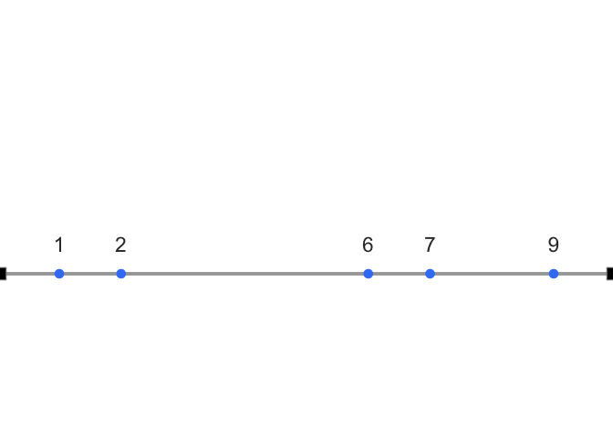
Now imagine the number line as a teeter-totter. Only when the fulcrum is placed at 5 does the board balance:
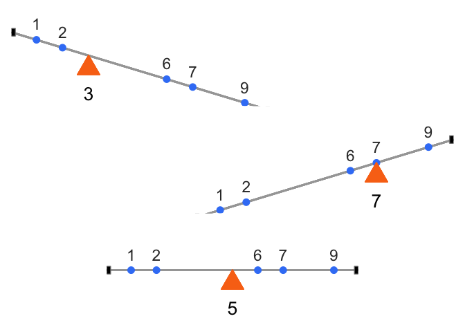
Formally, this means the signed distances from the mean always cancel out:
\((1−5)+(2−5)+(6−5)+(7−5)+(9−5)=0\)
This makes the mean unique. It is the only value for which the sum of deviations equals zero:
\(\sum_{i=1}^{n}x_{{i}-a} = 0 \quad \Rightarrow \quad a = \bar{x}\)
The mean is not just a “typical” value, it is the one point where the data balance. And that balancing property is exactly why the raw deviations always sum to zero. To summarize variation, we need a way around this problem.
1.10.3.3 The squared deviations
The standard trick is to square the deviations. Since \(2^2 = 4\) and \((-2)^2 = 4\), squaring turns every negative into a positive, so the deviations can no longer cancel. We call these squared deviations. Here is the same table with a column for them:
| scores | values | mean | Difference_from_Mean | Squared_Deviations |
|---|---|---|---|---|
| 1 | 1 | 4.5 | -3.5 | 12.25 |
| 2 | 6 | 4.5 | 1.5 | 2.25 |
| 3 | 4 | 4.5 | -0.5 | 0.25 |
| 4 | 2 | 4.5 | -2.5 | 6.25 |
| 5 | 6 | 4.5 | 1.5 | 2.25 |
| 6 | 8 | 4.5 | 3.5 | 12.25 |
| Sums | 27 | 27 | 0 | 35.5 |
| Means | 4.5 | 4.5 | 0 | 5.91666666666667 |
The first score of 1 sits 3.5 below the mean, so its deviation is \(-3.5\) and its squared deviation is \((-3.5)^2 = 12.25\). Now that nothing is negative we can add them up, and that total is the sum of squares (SS). You will meet this quantity again in the ANOVA chapter, but there is nothing more to it than the sum of those squared deviations.
1.10.3.4 Finally, the variance
We have already computed the variance, one step at a time, without naming it. The goal was a single number summarizing spread, but deviations give us as many numbers as we have data points, so we want their average. Sum the squared deviations, divide by how many there are, and that is the variance:
\[variance = \frac{SS}{N}\]
For our data it comes to 5.916. On its own that number is hard to interpret, because squaring the deviations put it on a squared scale, so it is no longer in the same units as the data. The fix is to take the square root, \(\sqrt{5.916} \approx 2.43\).
1.10.4 The Standard Deviation
That square root is the standard deviation (SD), so we had already computed it a step earlier without naming it:
\[\text{standard deviation} = \sqrt{Variance} = \sqrt{\frac{SS}{N}} = \sqrt{\frac{\sum_{i}^{n}(x_{i}-\bar{x})^2}{N}}\]
The square root “unsquares” the variance, putting the measure of spread back on the original scale of the data. Here is the table one more time:
| scores | values | mean | Difference_from_Mean | Squared_Deviations |
|---|---|---|---|---|
| 1 | 1 | 4.5 | -3.5 | 12.25 |
| 2 | 6 | 4.5 | 1.5 | 2.25 |
| 3 | 4 | 4.5 | -0.5 | 0.25 |
| 4 | 2 | 4.5 | -2.5 | 6.25 |
| 5 | 6 | 4.5 | 1.5 | 2.25 |
| 6 | 8 | 4.5 | 3.5 | 12.25 |
| Sums | 27 | 27 | 0 | 35.5 |
| Means | 4.5 | 4.5 | 0 | 5.91666666666667 |
Our standard deviation, \(\sqrt{5.916} \approx 2.43\), makes far more sense than the variance did. A variance of 5.916 feels too large for this data because it is on the squared scale, but an SD of 2.43 lines up with the actual deviations, since most scores fall within about 2.4 of the mean of 4.5.
That is what makes the SD so useful. Told only that a dataset has a mean of 4.5 and an SD of 2.4, you already have a picture of it: values cluster around 4.5, not exactly at it, with a typical spread of two to three units either way. It gives you the typical deviation from the mean while staying in the original units.
1.10.5 Sample versus population: a note on \(n - 1\)
One detail we glossed over: is \(N\) the size of the whole population, or just the size of our sample? For the mean it does not matter. The sample mean \(\bar{x}\) is unbiased, meaning that averaged across many samples it lands right on the true population mean.
The standard deviation is not so well behaved. A sample standard deviation computed by dividing by \(N\) comes out systematically too small. The reason is that \(\bar{x}\) is calculated from the same points used to measure spread, which pulls those points artificially close to it, so the distances we are averaging are shorter than they should be.
The fix is to divide by \(n-1\) instead of \(n\):
\[s_{n-1}^2 = \frac{1}{n-1}\sum_{i=1}^n (x_i - \bar{x})^2\]
This is what R’s sd() function already does, and it is what “the sample standard deviation” means unless you are told otherwise. Chapter 3 returns to this and shows the bias directly with a simulation, once we have the vocabulary of populations, samples, and estimation to explain why the correction is the right size.
1.10.6 Mean Absolute Deviation
So far we’ve handled the “differences cancel out” problem by squaring deviations. But there’s another simple option: take the absolute value of each deviation from the mean. That way, every difference becomes positive, and when we add them up we don’t end up at zero.
Here’s what that looks like for our data:
| scores | values | mean | Difference_from_Mean | Absolute_Deviations |
|---|---|---|---|---|
| 1 | 1 | 4.5 | -3.5 | 3.5 |
| 2 | 6 | 4.5 | 1.5 | 1.5 |
| 3 | 4 | 4.5 | -0.5 | 0.5 |
| 4 | 2 | 4.5 | -2.5 | 2.5 |
| 5 | 6 | 4.5 | 1.5 | 1.5 |
| 6 | 8 | 4.5 | 3.5 | 3.5 |
| Sums | 27 | 27 | 0 | 13 |
| Means | 4.5 | 4.5 | 0 | 2.16666666666667 |
The last column shows absolute deviations. If we take their mean, we get the mean absolute deviation (MAD). Notice this acts a lot like the standard deviation: it’s the average size of a deviation from the mean, only without squaring. Both approaches, squaring and taking absolute values, solve the same problem in slightly different ways. Squaring is more common because it leads to nice mathematical properties (like in regression and ANOVA), but the MAD can be more intuitive to interpret.
1.11 Remember to look at your data
Descriptive statistics are useful, but they are also compressed summaries. They reduce a dataset to a few numbers, which means they always lose detail. That’s fine if the summary captures the important features, but sometimes it doesn’t.
The safest habit is to always combine descriptive statistics with graphs. Compute the summaries, then plot the data, and check that the two tell the same story. We just did this with ozone: the gap between the mean and the median said “skewed,” and the histogram confirmed it.
When the numbers and the graph disagree, believe the graph. A summary can only report what it was designed to measure, while a plot shows you everything, including whatever you failed to anticipate. The next two examples show just how badly summaries can mislead when you skip that step.
1.11.1 Anscombe’s Quartet
Francis Anscombe (Anscombe (1973)) made this point with a famous example, now called Anscombe’s Quartet. Each panel in Figure Figure 1.13 shows pairs of \(x\) and \(y\) values as a scatterplot.
Visually, the four panels are very different: one looks linear, one curved, one is mostly linear except for an outlier, and one forms a near-vertical line except for one point.

Yet if we summarize each quartet with just its descriptive statistics:
| quartet | mean_x | var_x | mean_y | var_y |
|---|---|---|---|---|
| 1 | 9 | 11 | 7.500909 | 4.127269 |
| 2 | 9 | 11 | 7.500909 | 4.127629 |
| 3 | 9 | 11 | 7.500000 | 4.122620 |
| 4 | 9 | 11 | 7.500909 | 4.123249 |
All four datasets have the exact same descriptive statistics:
same mean and variance for \(x\)
same mean and variance for \(y\)
same correlation between \(x\) and \(y\)
Yet the scatterplots could not look more different.
1.11.2 Datasaurus Dozen
The Datasaurus Dozen (Matejka and Fitzmaurice 2017) takes Anscombe’s point further: 13 datasets with nearly identical means, variances, and correlations, but when plotted, the points form shapes like a star, a circle, or even a dinosaur. A reminder that your numbers might look like a dinosaur if you don’t plot them.
1.12 Chapter Summary
Why it matters. Every analysis later in this course assumes you already have numbers that mean something and a sense of what they look like. This chapter covers both halves of that: where data come from, and how to describe them once you have them.
On measurement and study design:
Why statistics matters. It will not answer every scientific question, but it provides a disciplined way to separate signal from bias, and to avoid being fooled by aggregated data, as Simpson’s paradox shows.
Operationalization and measurement. Turning a broad concept like soil health into something recordable is a decision you have to make and justify, not something the data hands you.
Scales of measurement. Nominal, ordinal, interval, and ratio, plus the continuous-versus-discrete distinction. These determine which statistical tools are available to you, which is why we return to them all semester.
Predictors and outcomes. The roles variables play in an analysis, and the several vocabularies used to describe them.
Experimental and non-experimental research. Environmental science rarely permits full experimental control, so the field leans on quasi-experiments, long-term time series, and case studies.
On describing data:
Plot first. Scatter plots and histograms show the shape of a distribution, and bin width is a choice that changes what you see.
Central tendency. The mode, median, and mean each summarize the “middle” differently, and they diverge when data are skewed.
Variation. The range, then deviations from the mean, then squared deviations, the sum of squares, the variance, and finally the standard deviation, which returns the measure of spread to the original units.
Always look at the graph. Anscombe’s Quartet and the Datasaurus Dozen make the point that identical summary statistics can describe radically different data.
1.13 Videos
1.13.1 Terms of Statistics
1.13.2 Measures of center: Mode
1.13.3 Measures of center: Median and Mean
1.13.4 Standard deviation part I
1.13.5 Standard deviation part II
Anscombe, F. J. 1973. “Graphs in Statistical Analysis.” American Statistician 27: 17–21.
Barnes, Mallory L. 2023. Statistics for Environmental Science.
Matejka, Justin, and George Fitzmaurice. 2017. “Same Stats, Different Graphs: Generating Datasets with Varied Appearance and Identical Statistics Through Simulated Annealing.” Proceedings of the 2017 CHI Conference on Human Factors in Computing Systems, 1290–94. https://doi.org/10.1145/3025453.3025912.
von Kügelgen, Julius, Luigi Gresele, and Bernhard Schölkopf. 2021. “Simpson’s Paradox in COVID-19 Case Fatality Rates: A Mediation Analysis of Age-Related Causal Effects.” IEEE Transactions on Artificial Intelligence 2 (1): 18–27. https://doi.org/10.1109/TAI.2021.3073088.